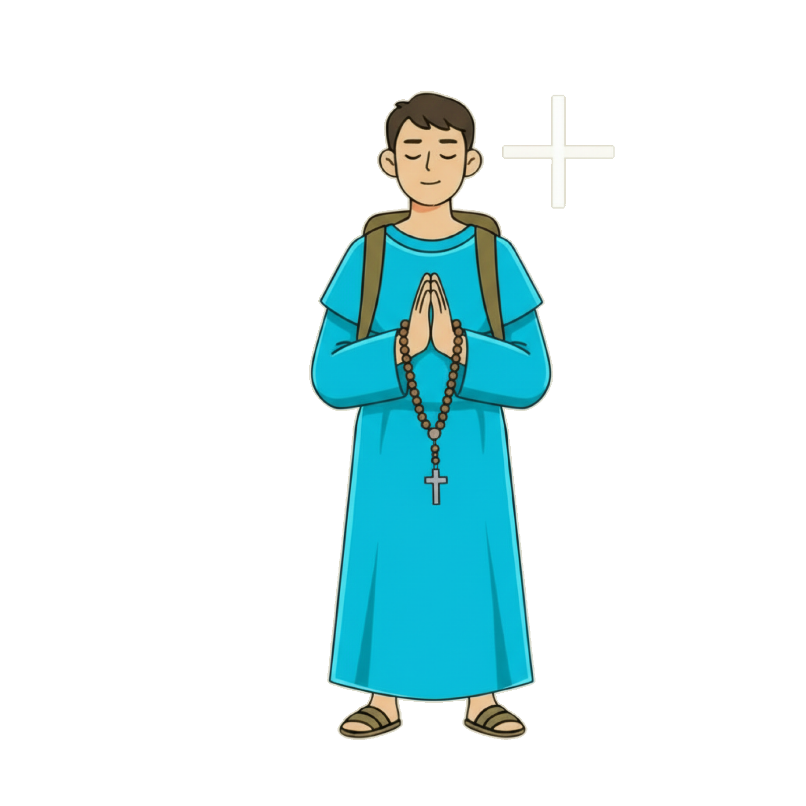

VISTA A — hero de orar con el popup de texto NUEVO (angosto, letra menor) coexistiendo con la columna de beads en el margen derecho. Pulsa ▶ para ver el avance pasivo.

Misterios Gozosos
La Anunciación
El sí que abre la historia
Evangelio
0:00
0:30
TemaColor de beads · Misterio
0.0spista simulada · 30s
56px
36 (ancho)130 (angosto)
89%
25% (bajo)92% (alto)
0.82
0.55 (transparente)1 (opaco)
14px
0 (nítida)30 (muy difusa)
20px
1336 (actual)
16px
1642
7px
220
0.60
0 (sin sombra)1 (máxima)
Defaults: espacio derecho 56px · alto 89% · opacidad 0.82 · blur 14px · font-size 20px · bead 16px · gap 7px · sombra 0.60.
Las beads son pasivas: no se tocan, avanzan solas con el tiempo de audio. La activa pulsa (beadPulseFilled); las pasadas quedan llenas; al terminar aparece la cruz lux.